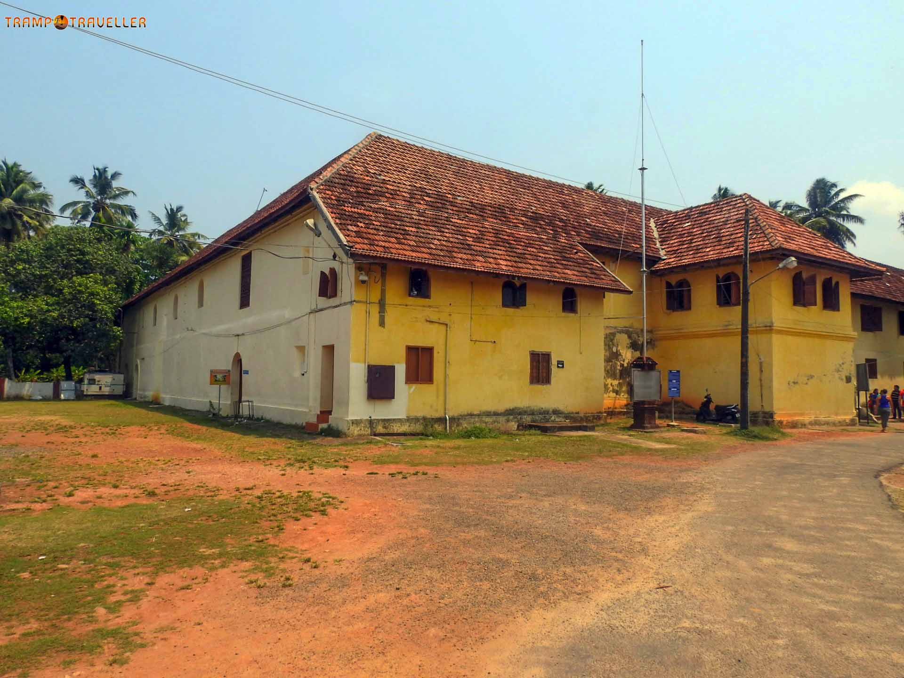
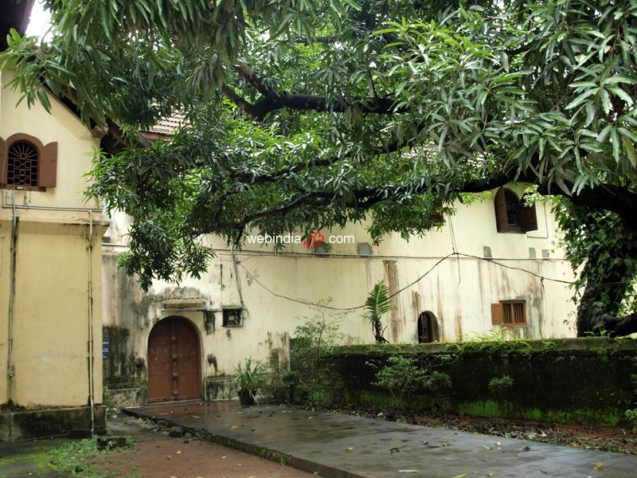

The Museum of Mattancherry
A stroll through the lanes of Fort Kochi will definitely attract you to the rustic and old-fashioned neighbourhood of Mattancherry. It is said that back in the days, this cheri (street), was lined with mutton butchers, and so it ended up being called “Muttoncherry” which over the years evolved into “Mattancherry”. Today the place exhibits centuries-old architectures and various social and cultural imprints left behind by foreigners. Declared as a heritage site by the government, Mattancherry has been an inspiration to historians, film-makers, travellers and artistes alike. Amongst all the Ernakulam tourist places, this museum is one of the most prominent attractions.
...
...